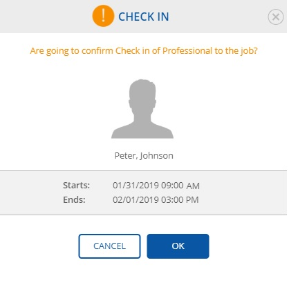
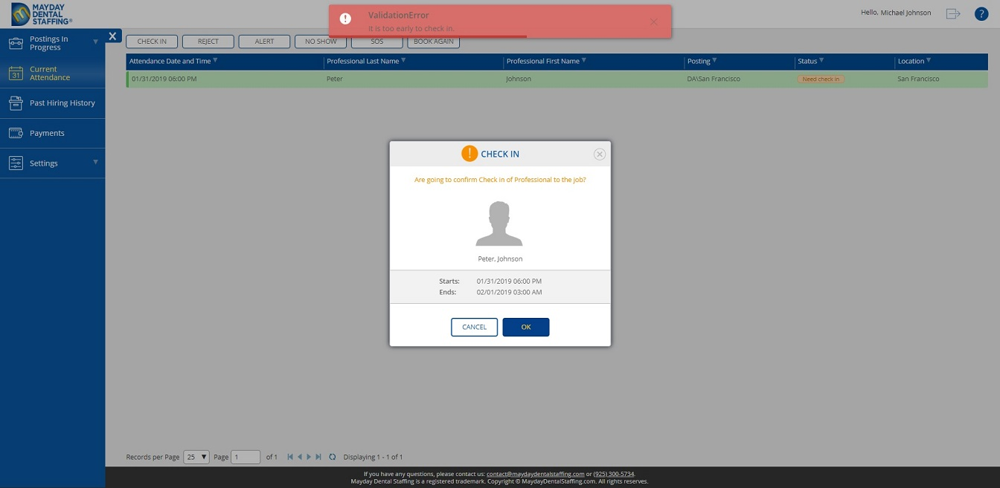

4.3 Check in Dialog
Navigate to
Current Attendance
view.
Select a required record with
Need check in
status.
Note:
Only records with
Need check in
status are available to make
Check in
Click
Check In
button.
Observe
Check in
dialog.

Click
OK
button.
Observe at
Current Attendance
view that the status is changed.
Note:
Please be advise that it is possible to make Check in one hour before and one hour afer job starts. Otherwise a validation error appeares.
